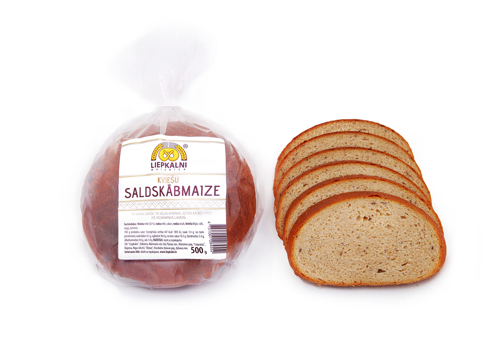

BIO Pilngraudu rupjmaize
BIO rudzu pilngraudu milti 60%,
dabīgais ieraugs (BIO rudzu milti, ūdens),
BIO cukurs,
BIO rudzu iesals,
BIO ķimenes,
sāls.
Bio sēklu maize
BIO rudzu pilngraudu milti,
dabīgais ieraugs (BIO rudzu milti, ūdens),
BIO cukurs,
BIO ķirbju sēklas 5%,
BIO saulespuķu sēklas 5%,
BIO linsēklas 5%, BIO rudzu iesals,
sāls.
BIO Rudzu saldskābmaize

BIO rudzu pilngraudu milti 65%,
dabīgaisieraugs (BIO rudzu milti, ūdens),
BIO cukurs,
BIO rudzu iesals,
BIO ķimenes,
sāls.
Bezmiltu maize
Ūdens,
auzu pārslas,
saulespuķu sēklas,
speltas pārslas,
linsēklas,
augu šķiedrvielas,
(celtekas, citronu, auzu, ābolu, kviešu) ķirbju sēklas,
sezama sēklas,
bio rudzu
pilngraudu ieraugs,
rudzu un kviešu dīgļi,
sāls,
kartupeļu ciete,
kviešu lipeklis,
miežu iesala ekstrats.
BIO Baltmaize
BIO kviešu milti,
bio cukurs,
bio saulespuķu eļļa,
bio raugs,
sāls.
BIO Baltmaize ar sēklām
Bio kviešu milti,
bio cukurs,
bio saulespuķu eļļa,
bio raugs, bio saulespuķu sēklas,
bio linsēklas,
bio sezams,
bio ķimenes,
sāls.
BIO Saulespuķu sēklu maize
Bio kviešu milti,
bio saulespuķu sēklas,
bio drupināti graudi (rudzu, auzu, miežu, griķu, prosas),
bio pilngraudu kviešu milti,
bio pilngraudu rudzu iesals,
bio rīsi,
bio linsēklas,
bio kviešu iesals,
bio raugs,
bio cukurs,
sāls.
BIO Kviešu saldskābmaize
BIO kviešu milti,
BIO rudzu milti,
BIO cukurs,
BIO eļļa,
BIO rudzu iesals,
sāls,
BIO ķimenes,
BIO presētais raugs.
BIO Kviešu sēklu saldskābmaize
BIO kviešu milti 34%,
ūdens,
BIO rudzu milti,
BIO cukurs,
BIO saulespuķu sēklas 6%,
BIO linsēklas 6%,
BIO sezama sēklas 6%,
BIO augu eļļa,
sāls,
BIO presētais raugs,
BIO rudzu iesals,
BIO ķimenes.
Kokosriekstu cepumi
Kokosriekstu skaidiņas,
bio olas*,
bio sviests*,
bio cukurs*.
*- bioloģiskās izejvielas 50%. LV-BIO-01
Auzu-kanēļa cepumi
Auzu pārslas 22%,
kviešu milti,
olas,
rozīnes,
cukurs,
sviests,
ķirbju sēklas,
saulespuķu sēklas,
sezama sēklas,
cidoniju sukādes,
mandeles,
kanēlis 0.6%,
irdinātājs-dzeramā soda.